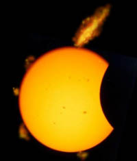

Posted 11/08/99 5:28pm by Tony Smith
Eclipse update: Apple PR stunts shocks World
The IT industry was left reeling today as Apple mounted its most audacious promotional campaign yet -- one that literally cast its famous 1984 Superbowl ad into the shade.
At 11am British Summer Time, the UK was overcast by the largest Apple logo over seen. In central London, traffic halted as millions of Brits paused to watch what Apple spokesmen called the Message of the Millennium.
"Find out why 2000 won't be like Y2K," was blazoned across the sky as the Apple logo faded to totallity.
Speaking from Apple global HQ, interim CEO Steve Jobs said: "God is a great Mac fan, and when we took the plan to Him earlier this year, he was thrilled to take part."
Company CFO Fred Anderson told The Register the Almighty had initially refused to have His creation used for marketing purposes, and could only be persuaded to hire out the sun and moon for the occasion for a substantial dollar sum.
"The payment was significant," admitted Anderson, "but no more so than any other advertising campaign of this scale. God's rates are really quite reasonable.
"We expect to a take an exceptional charge over the next two financial quarters, but this will hopefully be covered by an increase in iMac of Biblical proportions sales over the period," he added.
Apple's move follows Microsoft's failed attempt last year to buy the moon and convert it into a permanently revolving Internet Explorer logo.
"We may as well go home," one representative of Microsoft's ad agency was heard to say when rumours of the Apple extravaganza emerged last night.
God is on holiday and not available for comment, said an Oracle spokesman. ?
See also
Lucent logo captures company in 'single masterful brush stroke'
Intel registers loop to stop people going inside
Wibbly Wobbly Web casts shadow over eclipse